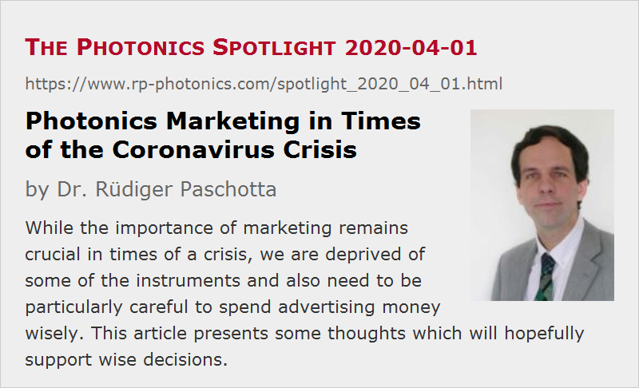

Photonics Marketing in Times of the Coronavirus Crisis
Posted on 2020-04-01 as a part of the Photonics Spotlight (available as e-mail newsletter!)
Permanent link: https://www.rp-photonics.com/spotlight_2020_04_01.html
Author: Dr. Rüdiger Paschotta, RP Photonics Consulting GmbH
Abstract: While the importance of marketing remains crucial in times of a crisis, we are deprived of some of the instruments and also need to be particularly careful to spend advertising money wisely. This article presents some thoughts which will hopefully support wise decisions.

The current coronavirus crisis has serious economical consequences which confront business with a variety of challenges. While many companies are struggling with direct impacts on their business, such as interruptions of their supply chains, essentially all are affected by the profound uncertainties and the expected substantial worldwide recession. A lot of business decisions need to be made, trying to make companies as resilient as possible. Also, the crisis will presumably end at some point; you want to be positioned well when business starts to take off again.
While I recently published thoughts for understanding the virus crisis, pointing out an interesting analogy to laser physics, in this article I would like to address specifically some business aspects in the context of photonics marketing. So this text is relevant primarily (a) for the marketing teams and (b) for the management. (Maybe you could forward it those colleagues for whom it is more relevant?) I am obviously not neutral on such issues, but you may nevertheless engage with various presented thoughts and form your own opinion. I think it is pretty well known that our approach is always to work hard for delivering well working solutions for our customers, rather than seducing them to spend money on ineffective instruments.
Further, I assume that we do not need to debate the continuing importance of marketing in general. Obviously, you don't want to get your market share reduced exactly in such a time. So we can concentrate on suitable options, of course always keeping in mind the aspect of value for money. Wasting an advertising budget is certainly something to be avoided particularly now.
Remaining Options for Photonics Marketing
Some marketing instruments of central importance have largely become unavailable due to the crisis. In particular, conferences and exhibitions are canceled or at least postponed one after the other, and any further activities requiring direct human contact become limited if not impossible. Obviously, this further increases the critical role of digital marketing instruments, which remain essentially unaffected.
A while ago, I have authored a number of articles in which I carefully discussed a variety of available marketing instruments in the area of photonics; if you are interested, you best start with the overview article. In any single case, I can only advise you to critically assess what exactly is on offer, since quite a few instruments turn out to be a waste of money (and your time) even when they look quite attractive at a first glance. Such experiences have actually created substantial frustration, which I understand well. It is also not a reasonable option just to try out everything – not only because of the large overall cost, but also because of the substantial amount of work required to assess the results. However, there is a number of useful criteria which can help you to find out what has a chance to work. In the following, I summarize those for you:
Reputation
Obviously, you would not like to advertise on any platform with a doubtful reputation. Well, Facebook is still earning billions despite catastrophic failure – just remember the scandal around Cambridge Analytica, where Facebook failed in an inexcusable way. While such activities even threaten our democracies, Facebook is apparently still not prepared e.g. to stop earning money with political advertising based on straight-out lies. Therefore, we will actually close down our (quite modest) Facebook presence, if they again participate in attacks on democracy, and would certainly not spend money there before their policies become responsible. Presumably, many others will go that way. Anyway, I suppose that Facebook is not of major importance for photonics marketing, which is essentially business-to-business.
Popularity
Even the best reputation of a platform doesn't help you much if it is not sufficiently popular at the same time. (More precisely, what is important is popularity of that part of a platform which is relevant for you as an advertiser.) Unfortunately, it is very hard to compare the popularity of different internet platforms due to the very limited availability of data, and the often rather poor credibility of presented data.
I advise you to generally use published traffic data with great care, since usually you have no way to check them, and often enough it is even hard to find out what exactly the data apply to – for example, to a buyer's guide or to the whole website on which it is placed? Such questions can be of crucial importance, since e.g. any traffic on a huge bunch of old journal articles is irrelevant for you as an advertiser if that content is not closely linked with a buyer's guide.
On the other hand, a very good measure is the amount of referral traffic which your own website gets from such a platform. This is highly interesting, because (a) it is most relevant for your purpose, and (b) you can measure it yourself (or ask an internal IT person to do that for you). So referral traffic data are a good measure for how effective a platform is in generating sales leads for you. The caveat is only that you can do that test only if you have entries there – and only paid entries will give you the essential data. So you may need to test such entries at least for a couple of months, or on some platforms for a whole year (while we offer 3-month tests). By the way, although sales generation is often of primary importance, don't forget to judge the impact on your branding as well.
Further, you can do certain plausibility checks:
- For example, if a platform claims enormous traffic (e.g. in terms visitors per month) while generating only a tiny amount of referral traffic, you may ask how that can be – if you still care about that platform, because without much referral traffic it is unlikely anyway that there will be a big benefit for you.
- You can estimate the search engine ranking with a few internet searches for relevant terms. Obviously, large traffic is not quite compatible with a poor search engine ranking.
- You may also simply have a careful look at a resource and form your opinion concerning how likely it is that a lot of people in your particular target audience would use it regularly. For example, does it present a wealth of useful content?
Well, the result of such comparisons will very likely be that the RP Photonics website is by far most promising. It contains my famous RP Photonics Encyclopedia and a carefully designed RP Photonics Buyer's Guide. Further, those two resources are intimately linked with each other, and exactly for that reason the popularity of the encyclopedia is so relevant for the buyer's guide and thus for your marketing purposes. Note that we display not only company logos and the like on pages of encyclopedia articles – we even publish product descriptions there, as you can see e.g. at the end of the article on laser diodes.
You are welcome to wonder whether I have manipulated the criteria such as to make our offers look stronger than others, but I am confident that you will confirm that they are quite reasonable.
Relevance for Your Target Audience
This is another very important criterion: the platform must be attractive not just for many people, but specifically for those whom you consider to belong to your target audience. To be honest, RP Photonics will not always prevail in that discipline. For example, if your company is targeting the automobile industry or medical doctors, I'm afraid that the audience match is not ideal; I don't expect many of them to belong to the readers of my encyclopedia. Other photonics platforms will probably have the same problem. You may then have to go for certain specialized journals and events outside photonics. On the other hand, if you are targeting photonics people – including engineers, entrepreneurs, scientists etc. – you will be very well served by us.
Fairness of Offers
Finally, you will probably prefer to get consistently fair offers – not just to save some money, but to believe in the credibility of your (potential) partner. Some examples:
- You don't want to read lots of baseless promises (e.g. that the search engine ranking of your own website will greatly benefit from links on a platform which itself has a poor ranking).
- Also, you don't want to be confronted with great numbers without being told exactly what they mean (e.g. to exactly which part of a platform they apply).
- Further, you want to be told in a clear and understandable way what you will get – not just a “premium placement in searches”, for example, without knowing what kind of search they mean, how often it is done, and what will be premium about it. I am often surprised to see what vague promises appear to be sufficient for selling some stuff to people.
A more comprehensive impression will be created only after you tried it out. For example, you will see how much improved your paid entries will look, how diligent the service really is, and of course how much referral traffic you will get in the end.
Spending Marketing Money Wisely
Simply cutting down marketing expenses in a difficult time for business can of course hardly be considered to be a wise management decision:
- First of all, preserving or expanding your market share is most essential exactly then.
- Further, how effective and efficient will it be to pay the salaries of marketing people while depriving them of the means to do useful work for you? Obviously, you don't want to lose much of the impact of your marketing team while reducing the overall cost only by a relatively modest margin. Efficiency is key, and that should be measured as obtained marketing value divided by the overall cost – not just external expenditures, but total cost including salaries.
- Another aspect is that cutting down advertising expenses may signal to the whole world that you are in trouble – to potential customers, to potential investors and to your own personnel. Note that the most productive and creative employees are likely to be the first moving over to your competitors if the impression is that the good times are over. For various reasons, such budget cuts carry the risk of starting a dangerous avalanche of decline.
On the other hand, wasting substantial parts of your marketing budget is particularly unacceptable in times of crisis. I know that particularly some big companies tend to throw the money in the same direction each year, without ever checking whether it works for them. Maybe some lazy people just think that their decisions are best justified towards the management e.g. when they simply deal with those who have been in business for the longest time. It is then high time to critically assess such spending in order to concentrate the money on what works.
Still, it may be a good idea not to bet on one horse only, and particularly not on one type of marketing instrument only. For example, optimizing your own company website is always a good thing – a lot of work, but worthwhile in the end. Still, this can normally not be considered as sufficient; it is best to use a combination of measures with synergistic effects. For example, welcome people in the best way on your website, and lead more people there from outside (e.g. with an enhanced presence in a high-quality buyer's guide) in order to maximize those benefits. In addition, take care of your brand – for example, sponsor our encyclopedia in order to be visible while demonstrating your helpful contribution for the whole photonics community. With a well established brand, you build trust which will help on the day where they consider to buy your products.
A Special Offer
At RP Photonics, we strongly believe in the importance of a simple, consistent and fair price structure, and we certainly don't want to undermine that with all sorts of discounts. However, the coronavirus crisis is a very special situation, which is quite difficult for many. Therefore, we have decided to offer a special discount in conjunction with our ad package for the RP Photonics Buyer's Guide:
- For new ad package customers, we grant a 25% discount on up to 6 months of the ad package. For example, you can do a six-month test with that discount, or book for a full year with effectively 12.5%.
- For existing ad package customers, we will deduct 25% of the cost for 6 months when it comes to the next prolongation of the ad package – even if the crisis will be over by then, as we all hope.
We have also recently introduced a startup discount, which can be applied at the same time.
Working Together Has Always Helped
So we believe that we should all continue in a pronouncedly cooperative manner in order to get through the current crisis well and thrive again as soon as we got through all that. We should just spend our resources (money and time) most wisely, i.e., productively, rather than to develop panic and to endanger values which we have built up in the past.
Even though the overall economical impacts of the coronavirus crisis will be serious, I am confident that essentially all those in photonics doing competent, useful and cooperative work will get well through this well. And we are happy to continuously contribute our part.
By the way, your views are warmly welcome – use the feedback form below to submit your questions and comments!
This article is a posting of the Photonics Spotlight, authored by Dr. Rüdiger Paschotta. You may link to this page and cite it, because its location is permanent. See also the RP Photonics Encyclopedia.
Note that you can also receive the articles in the form of a newsletter or with an RSS feed.
Questions and Comments from Users
Here you can submit questions and comments. As far as they get accepted by the author, they will appear above this paragraph together with the author’s answer. The author will decide on acceptance based on certain criteria. Essentially, the issue must be of sufficiently broad interest.
Please do not enter personal data here; we would otherwise delete it soon. (See also our privacy declaration.) If you wish to receive personal feedback or consultancy from the author, please contact him e.g. via e-mail.
By submitting the information, you give your consent to the potential publication of your inputs on our website according to our rules. (If you later retract your consent, we will delete those inputs.) As your inputs are first reviewed by the author, they may be published with some delay.
|  |
If you like this page, please share the link with your friends and colleagues, e.g. via social media:
These sharing buttons are implemented in a privacy-friendly way!